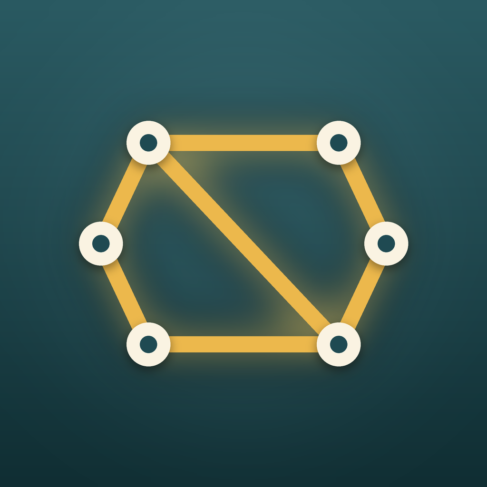

Support
One Path
Use each visible connection exactly once. You may revisit dots; crossings without a dot are not junctions. Solve eight original graph boards by tracing or tapping large dot buttons. Undo, restart, revisit earlier boards, and resume your local route and unlocked progress.
Get help
Email hi@mosselora.com with your device model and what happened. We read every message.
Your progress
Progress is saved on your device only. Deleting the app removes it; there is no cloud backup.